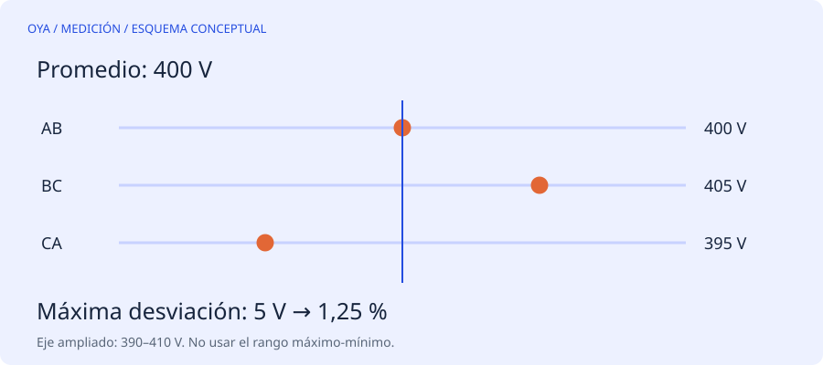

Hay varias definiciones y no son intercambiables
Cuando tres tensiones no coinciden, una operación frecuente es restar la menor a la mayor y dividir por el promedio. Ese cálculo produce un rango relativo, pero no es el método de máxima desviación respecto al promedio utilizado aquí para evaluar magnitudes de tensión entre líneas.
La diferencia importa porque dos porcentajes definidos de forma distinta no se pueden comparar con el mismo límite. Tampoco debe confundirse este cálculo de tres magnitudes con la relación entre componentes de secuencia negativa y positiva, que requiere información fasorial.
Un ejemplo con 400, 405 y 395 V
El promedio es (400+405+395)/3 = 400 V. Las desviaciones absolutas son 0, 5 y 5 V. La mayor es 5 V, de modo que el desequilibrio por este método es 5/400·100 = 1,25 %.
El rango máximo-mínimo es 10 V. Dividirlo por 400 V daría 2,50 %, el doble del resultado anterior. No es un error aritmético: responde a otra definición.
| Lectura | Desviación absoluta respecto a 400 V |
|---|---|
| VAB = 400 V | 0 V |
| VBC = 405 V | 5 V |
| VCA = 395 V | 5 V |
Por qué se revisa en motores
Una pequeña desigualdad de tensión puede provocar una desigualdad de corriente mucho mayor y calentamiento adicional. La documentación del DOE recomienda mantener el desequilibrio de tensión en bornes dentro del 1 % para servicio nominal; por encima, deben revisarse la aplicación y las indicaciones de reducción de carga. Ese porcentaje no es una garantía de que el resto de condiciones sea correcto.
No se ofrece aquí una tabla automática de potencia permitida: la curva aplicable depende del motor y del criterio del fabricante. Una calculadora que devuelve dos decimales no puede determinar por sí sola si la máquina puede continuar trabajando.
Dónde y cómo interpretar las lecturas
Las tensiones relevantes son las tres medidas entre líneas en el punto y estado de carga definidos para el estudio. Una medida tomada aguas arriba puede no revelar una conexión resistiva cercana al motor. Comparar lecturas hechas con cargas muy distintas también puede ocultar el origen del problema.
Entre las causas posibles están distribución desigual de cargas, conexiones deterioradas y problemas de alimentación. Una intensidad desigual también puede tener causas internas del motor. La investigación debe separar suministro, conexiones y máquina; no atribuirlo todo al rebobinado.
Límites del cálculo
El formulario acepta tres valores positivos y devuelve promedio, máxima desviación y porcentaje. No evalúa ángulos, armónicos, transitorios ni salida PWM de un variador. Un multímetro no apropiado para esa salida puede ofrecer cifras que no representan la magnitud deseada. Las mediciones energizadas requieren equipos con categoría adecuada y personal cualificado; esta explicación no es un procedimiento de trabajo con tensión.
Fuentes y alcance
Referencia de consulta: DOE: eliminar el desequilibrio de tensión, Motor Systems Tip Sheet 7. Los ejemplos numéricos son educativos y no describen un trabajo realizado.